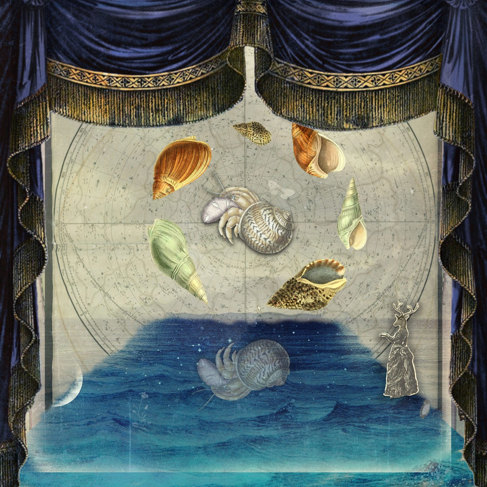

The ministry of small injustices uses hermit crabs and the somonka to solve the problem of food waste.

- Problem (chosen)
- Food waste
- Creature (dealt)
- Hermit crab
- Form (dealt)
- Somonka
The problem persists because what one household has outgrown, another has never been offered. A hermit crab cannot grow its own shell. When a larger one washes up, the crabs nearby gather beside it and arrange themselves by size, a small procession of borrowed houses on the wet sand, and wait. When the largest moves in, each takes the shell the one ahead has left. No crab has applied to the Ministry for a new shell. The Ministry has concluded that the crabs are courting.
The department of correspondence suggests that every street starts a shell chain on Sunday evening, beginning with the household with the largest fridge. Whatever it has outgrown is offered to the next household, together with a tanka of thirty-one syllables, and accepted with a tanka of thirty-one syllables in reply. Nothing may change hands without both poems.
Risks. Two households have exchanged the same jar of chutney since August and now write only to each other. The jar remains unopened. The Ministry has registered this as a marriage.
I have outgrown this
half a loaf, this lemon curd.
Those jars, that pot of cream
are yours, if you will have
them. I am leaving now.
[Your credit line: how the report was drafted, edited and illustrated]